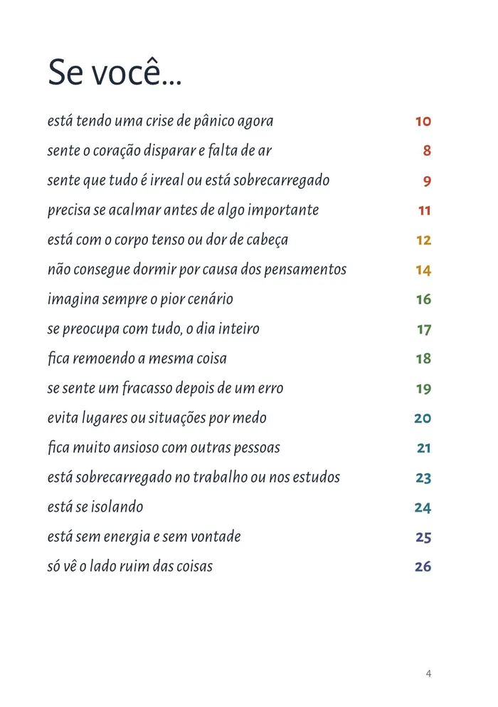
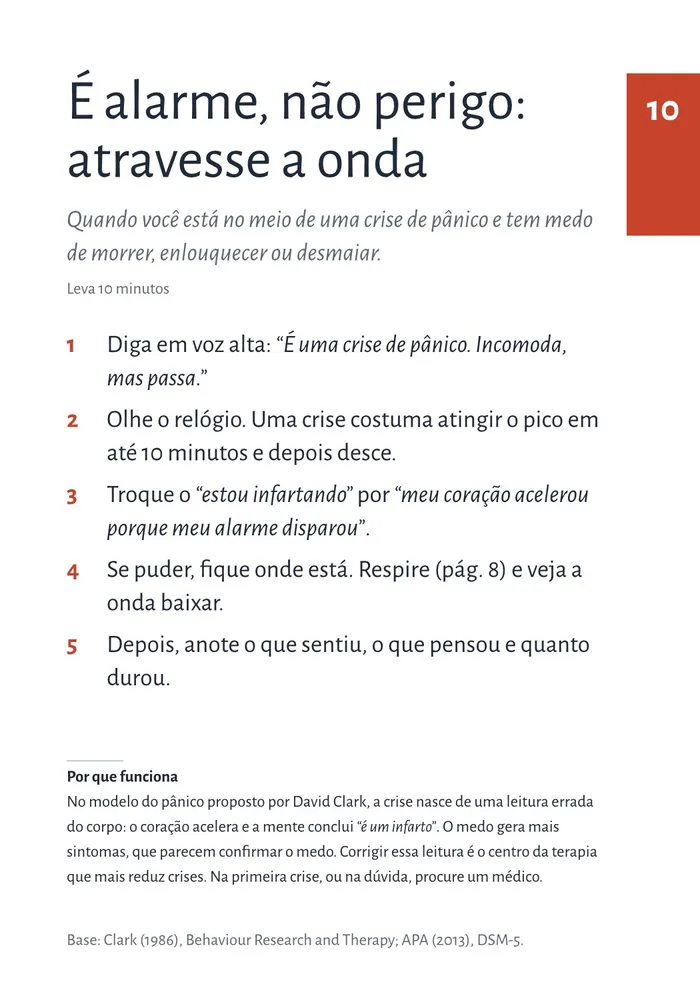
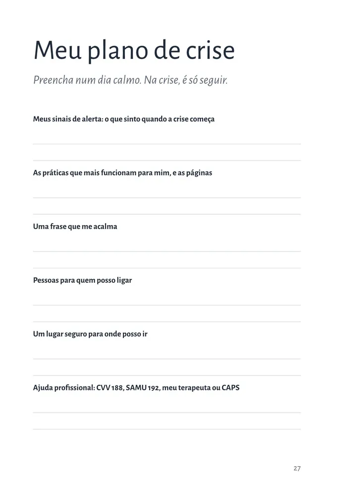

Se você…
É assim que o livro começa: você procura o que está sentindo e vai direto para o número da página. Toque numa frase para ver o que tem lá.
está tendo uma crise de pânico agora10
10É alarme, não perigo: atravesse a onda
Quando você está no meio de uma crise de pânico e tem medo de morrer, enlouquecer ou desmaiar.
- Diga em voz alta: “É uma crise de pânico. Incomoda, mas passa.”
- Olhe o relógio. Uma crise costuma atingir o pico em até 10 minutos e depois desce.
Mais 3 passos e o porquê de funcionar estão na página 10.
sente o coração disparar e falta de ar8
8Respiração 4–6: desacelere o alarme
Quando o coração dispara, falta ar ou parece que você vai perder o controle.
- Apoie os dois pés no chão e solte os ombros. Se puder, apoie uma mão na barriga.
- Inspire pelo nariz contando até 4, deixando a barriga subir.
Mais 2 passos e o porquê de funcionar estão na página 8.
sente que tudo é irreal ou está sobrecarregado9
95-4-3-2-1: volte para o agora
Quando a cabeça disparou, tudo parece irreal ou você está sobrecarregado de estímulos.
- Olhe em volta e diga (em voz baixa ou mentalmente) 5 coisas que você vê.
- Toque e note 4 coisas que você sente: a roupa, a cadeira, a temperatura do ar.
Mais 3 passos e o porquê de funcionar estão na página 9.
precisa se acalmar antes de algo importante11
11Mente alerta, corpo calmo
Quando você precisa baixar a tensão antes de uma prova, reunião ou conversa difícil.
- Sente-se ereto e confortável, num lugar quieto. Feche os olhos.
- Escolha uma frase curta: “mente alerta, corpo calmo”.
Mais 3 passos e o porquê de funcionar estão na página 11.
imagina sempre o pior cenário16
16Pior, melhor, mais provável
Quando a mente cria uma cadeia de “e se…” que termina sempre na tragédia.
- Escreva o medo em uma frase.
- Qual o PIOR cenário possível? Escreva sem censura.
Mais 3 passos e o porquê de funcionar estão na página 16.
se preocupa com tudo, o dia inteiro17
17Hora marcada para se preocupar
Quando você se preocupa o dia inteiro com tudo e não consegue desligar.
- Marque 15 minutos fixos por dia para se preocupar, longe da hora de dormir.
- Durante o dia, quando vier uma preocupação, anote numa lista e diga: “depois”.
Mais 2 passos e o porquê de funcionar estão na página 17.
fica remoendo a mesma coisa18
18Saia do looping
Quando você repassa a mesma cena, a mesma dor, há horas.
- Perceba e nomeie: “estou ruminando”. Só nomear já cria distância.
- Pergunte: “isso está me levando a uma solução?” Se não, é looping.
Mais 3 passos e o porquê de funcionar estão na página 18.
se sente um fracasso depois de um erro19
19Reescreva a explicação
Quando você falhou em algo e a voz interna diz “sou um fracasso, nunca vai mudar”.
- Escreva o que aconteceu e a explicação que você deu.
- Ela é sobre você inteiro ou sobre este caso? (global x específico)
Mais 3 passos e o porquê de funcionar estão na página 19.
evita lugares ou situações por medo20
20A escada do medo
Quando você evita um lugar, uma situação ou uma tarefa por medo, e a lista de evitações cresce.
- Escreva a situação temida e quebre em 8 a 10 degraus, do mais fácil ao mais difícil.
- Dê uma nota de medo de 0 a 100 a cada degrau.
Mais 3 passos e o porquê de funcionar estão na página 20.
fica muito ansioso com outras pessoas21
21Largue os escudos
Quando em situações sociais você fica tenso, ensaia frases e tenta passar despercebido.
- Liste seus escudos: evitar olhar nos olhos, ensaiar falas, sentar no fundo, beber para relaxar.
- Escolha um escudo para largar na próxima situação.
Mais 3 passos e o porquê de funcionar estão na página 21.
está sobrecarregado no trabalho ou nos estudos23
23Divida o monstro
Quando a lista de tarefas parece uma montanha e você trava, ou está à beira do esgotamento.
- Escolha a tarefa que mais pesa e divida em partes de no máximo 30 minutos.
- Coloque cada parte numa agenda, com dia e hora.
Mais 3 passos e o porquê de funcionar estão na página 23.
está se isolando24
24Acione sua rede
Quando você está se isolando, achando que precisa dar conta de tudo sozinho.
- Escreva o nome de 3 pessoas com quem você se sente seguro.
- Mande uma mensagem simples para uma delas hoje: “posso te ligar mais tarde?”
Mais 3 passos e o porquê de funcionar estão na página 24.
está sem energia e sem vontade25
25Uma ação pequena
Quando falta vontade para tudo, e quanto mais você para, pior fica.
- Não espere a vontade chegar. Ela costuma vir depois da ação, não antes.
- Escolha uma coisa de 10 minutos: tomar banho, abrir a janela, lavar uma louça, sair na rua.
Mais 3 passos e o porquê de funcionar estão na página 25.
só vê o lado ruim das coisas26
26Três coisas boas
Quando você só enxerga o que deu errado e o dia parece todo cinza.
- Toda noite, antes de dormir, escreva 3 coisas que deram certo hoje.
- Podem ser pequenas: um café bom, uma mensagem, um problema resolvido.
Mais 2 passos e o porquê de funcionar estão na página 26.
São 16 situações no índice e 19 práticas no livro, para ter no celular na hora em que precisar.
Quero o Respiro por R$ 19,90Experimente a página 8 agora
A primeira prática do livro é a respiração 4–6: puxe o ar contando até 4 e solte contando até 6. Soltar mais devagar do que se puxa ativa o freio natural do coração. Faça um minuto com o círculo.
Se a respiração ficar desconfortável, pare e respire no seu ritmo.
Feito para ser usado, não só lido



As 19 práticas
Divididas em cinco partes. A cor de cada parte mostra o tamanho do alarme: do vermelho, para quando a crise está acontecendo, ao índigo, para os dias sem energia.
Na crise
- Respiração 4–6: desacelere o alarme8
- 5-4-3-2-1: volte para o agora9
- É alarme, não perigo: atravesse a onda10
- Mente alerta, corpo calmo11
Na mente
- O ABC do pensamento15
- Pior, melhor, mais provável16
- Hora marcada para se preocupar17
- Saia do looping18
- Reescreva a explicação19
No mundo
- A escada do medo20
- Largue os escudos21
- O círculo do controle22
- Divida o monstro23
- Acione sua rede24
Nos dias pesados
- Uma ação pequena25
- Três coisas boas26
De onde vêm as práticas
Cada prática termina com a explicação de por que funciona e de onde ela vem. O livro se apoia em 39 estudos e obras de referência, entre eles a resposta de relaxamento de Herbert Benson, de Harvard, o modelo do pânico de David Clark, de Oxford, o relaxamento muscular de Edmund Jacobson, os estudos sobre ruminação de Susan Nolen-Hoeksema e os exercícios de psicologia positiva de Martin Seligman.
Ver as 39 fontes
- Abramson, L. Y.; Seligman, M. E. P.; Teasdale, J. D. (1978). Learned helplessness in humans: critique and reformulation. Journal of Abnormal Psychology, 87(1), 49–74.
- American Psychiatric Association (2013). Manual diagnóstico e estatístico de transtornos mentais, DSM-5.
- Balban, M. Y. et al. (2023). Brief structured respiration practices enhance mood and reduce physiological arousal. Cell Reports Medicine, 4(1).
- Beck, A. T.; Emery, G.; Greenberg, R. L. (1985). Anxiety Disorders and Phobias: A Cognitive Perspective. Basic Books.
- Benson, H. (1975). The Relaxation Response. William Morrow.
- Benson, H.; Beary, J. F.; Carol, M. P. (1974). The relaxation response. Psychiatry, 37(1), 37–46.
- Borkovec, T. D. et al. (1983). Stimulus control applications to the treatment of worry. Behaviour Research and Therapy, 21(3), 247–251.
- Clark, D. M. (1986). A cognitive approach to panic. Behaviour Research and Therapy, 24(4), 461–470.
- Clark, D. M.; Wells, A. (1995). A cognitive model of social phobia. Em Heimberg, R. G. et al. (org.), Social Phobia. Guilford Press.
- Cuijpers, P. et al. (2014). Adding psychotherapy to antidepressant medication in depression and anxiety disorders: a meta-analysis. World Psychiatry, 13(1), 56–67.
- Dimidjian, S. et al. (2006). Randomized trial of behavioral activation, cognitive therapy, and antidepressant medication. Journal of Consulting and Clinical Psychology, 74(4), 658–670.
- Ellis, A. (1962). Reason and Emotion in Psychotherapy. Lyle Stuart.
- Gollwitzer, P. M.; Sheeran, P. (2006). Implementation intentions and goal achievement. Advances in Experimental Social Psychology, 38, 69–119.
- Hofmann, S. G. et al. (2012). The efficacy of cognitive behavioral therapy: a review of meta-analyses. Cognitive Therapy and Research, 36(5), 427–440.
- Holt-Lunstad, J.; Smith, T. B.; Layton, J. B. (2010). Social relationships and mortality risk: a meta-analytic review. PLoS Medicine, 7(7).
- Jacobson, E. (1938). Progressive Relaxation. University of Chicago Press.
- Karasek, R. A. (1979). Job demands, job decision latitude, and mental strain. Administrative Science Quarterly, 24(2), 285–308.
- Kessler, R. C. et al. (2006). The epidemiology of panic attacks, panic disorder, and agoraphobia. Archives of General Psychiatry, 63(4), 415–424.
- Lazarus, R. S.; Folkman, S. (1984). Stress, Appraisal, and Coping. Springer.
- Lewinsohn, P. M. (1974). A behavioral approach to depression. Em Friedman, R. J.; Katz, M. M. (org.), The Psychology of Depression. Wiley.
- Manzoni, G. M. et al. (2008). Relaxation training for anxiety: a ten-years systematic review with meta-analysis. BMC Psychiatry, 8, 41.
- Maslach, C.; Leiter, M. P. (2016). Understanding the burnout experience. World Psychiatry, 15(2), 103–111.
- McManus, F. et al. (2008). Why social anxiety persists: the role of safety behaviours. Behavioural and Cognitive Psychotherapy, 36(1), 91–106.
- Najavits, L. M. (2002). Seeking Safety. Guilford Press.
- Nolen-Hoeksema, S. (1991). Responses to depression and their effects on the duration of depressive episodes. Journal of Abnormal Psychology, 100(4), 569–582.
- Nolen-Hoeksema, S.; Wisco, B. E.; Lyubomirsky, S. (2008). Rethinking rumination. Perspectives on Psychological Science, 3(5), 400–424.
- Organização Mundial da Saúde (2017). Depression and Other Common Mental Disorders: Global Health Estimates. Genebra: OMS.
- Salkovskis, P. M. (1991). The importance of behaviour in the maintenance of anxiety and panic. Behavioural Psychotherapy, 19(1), 6–19.
- Sapolsky, R. M. (2004). Why Zebras Don’t Get Ulcers. 3. ed. Henry Holt.
- Scullin, M. K. et al. (2018). The effects of bedtime writing on difficulty falling asleep. Journal of Experimental Psychology: General, 147(1), 139–146.
- Seligman, M. E. P. (1991). Learned Optimism. Knopf.
- Seligman, M. E. P. et al. (2005). Positive psychology progress: empirical validation of interventions. American Psychologist, 60(5), 410–421.
- Stubbs, B. et al. (2017). An examination of the anxiolytic effects of exercise for people with anxiety and stress-related disorders: a meta-analysis. Psychiatry Research, 249, 102–108.
- Uchino, B. N. (2006). Social support and health. Journal of Behavioral Medicine, 29(4), 377–387.
- Walker, M. P.; van der Helm, E. (2009). Overnight therapy? The role of sleep in emotional brain processing. Psychological Bulletin, 135(5), 731–748.
- Wolitzky-Taylor, K. B. et al. (2008). Psychological approaches in the treatment of specific phobias: a meta-analysis. Clinical Psychology Review, 28(6), 1021–1037.
- Wolpe, J. (1958). Psychotherapy by Reciprocal Inhibition. Stanford University Press.
- Yerkes, R. M.; Dodson, J. D. (1908). The relation of strength of stimulus to rapidity of habit-formation. Journal of Comparative Neurology and Psychology, 18(5), 459–482.
- Zaccaro, A. et al. (2018). How breath-control can change your life: a systematic review on psycho-physiological correlates of slow breathing. Frontiers in Human Neuroscience, 12, 353.
O que o Respiro é, e o que não é
É
- Um guia para abrir na hora da crise e saber o que fazer nos próximos minutos.
- Um jeito de treinar, nos dias calmos, técnicas estudadas pela psicologia.
- Um apoio para levar à terapia, se você já faz ou quer começar.
Não é
- Uma promessa de acabar com a ansiedade de vez. Ansiedade é um alarme do corpo, e o livro ensina a baixar o volume dele.
- Um substituto para psicólogo ou psiquiatra. O livro explica quando e onde procurar ajuda, inclusive pelo SUS.
188Se você está em perigo agora, ligue para o CVV. 24 horas, gratuito. Também em cvv.org.br.
Respiro
- 19 práticas, uma por página
- Índice pelo que você está sentindo
- Plano de crise para preencher
- Guia de quando e onde procurar ajuda
- PDF de 30 páginas para celular, computador ou impressão
R$19,90
ou 6x de R$ 3,73 no cartão
Quero o Respiro por R$ 19,907 dias de garantia. Se o livro não for para você, peça o reembolso pela Hotmart em até 7 dias e receba o valor inteiro.
Perguntas
Como recebo o livro?
Logo depois da confirmação do pagamento, a Hotmart envia por e-mail o acesso para baixar o PDF. No Pix e no cartão, isso leva poucos minutos.
Consigo ler no celular?
Sim. O PDF abre em qualquer celular, tablet ou computador. Se preferir papel, ele tem tamanho A5 e pode ser impresso.
Preciso ler na ordem?
Não. O livro foi pensado para ser aberto na página de que você precisa. Use o índice “Se você…” e vá direto à prática.
O livro substitui terapia ou remédio?
Não. É um material de autocuidado. Ele pode acompanhar um tratamento, mas não substitui a avaliação de um profissional.
Quem escreveu?
Enzo de Araújo. O texto é original e foi escrito a partir dos estudos listados nas fontes, que você pode conferir nesta página.
É seguro comprar?
O pagamento é feito na página da Hotmart, uma das maiores plataformas de produtos digitais do Brasil. Seus dados de pagamento não passam por este site.
E se eu não gostar?
Você tem 7 dias para pedir o reembolso pela própria Hotmart, sem precisar explicar o motivo.